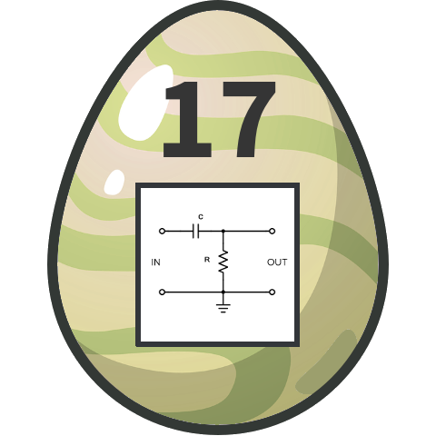

Thumper is looking for a new design for his eggs. He tried several filters with his graphics program, but unfortunately the QR codes got unreadable. Can you help him?!
This challenge was very misleading, and the hint added later did not help much to clarify. The left side image shows a honeycomb-type camera filter, and the right an electonic high pass filter, which also exists as optical filter variant. So, all hints seemed to point to some clever graphical filtering technique to be applied to the left side image, consistent with normal usage of the term. Unfortunately, the information content turns out to be too low to do anything. A lot of time was wasted before a hint form keep3r via brp64 (thanks to both!) finally opened my eyes: "Check the PNG specs!"
It turns out that PNG specifies several lossless preprocessing methods for images in order to improve the compression ratio. This is also referred to as filter. Now if one has seen this before, this may be obvious, but for normal mortals, this is very hard to guess from the information provided. It is unfortunate that this challenge became quite frustrating in that way, because the idea and execution is really excellent!
Enough grumping. According to the PNG specification,
every PNG file is structured as a series of chunks: IHDR, gAMA, cHRM, IDAT
and many more. PNG uses a lossless compression algorithm, the output of which is stored
in IDAT image data chunks. The properties of the image and the type of processing used
are stored in the IHDR header chunk. Its contents:
IHDR Chunk:
Data length = 13 bytes
CRC = 7dd4be95
Width: 1e0 (480)
Height: 1e0 (480)
Bit Depth: 8
Color Type: 6 (RGB + Alpha)
Compression Method: 0 (deflate)
Filter Method: 0 (adaptive)
Interlace Method: 0 (none)
Without interlacing, the process of PNG image encoding is roughly as follows:
So much for the theory. It seems that information can be hidden in the choice of filter type for each row, which is a really clever idea! In order to get at the filter type bytes, one needs to reverse the compression and chunking steps. There are probably tools out there which do this, but it can also be done without too much trouble from first principles:
import zlib
import struct
class PNG:
def __init__(self, png_file):
with open(png_file, 'rb') as fh:
self.raw = fh.read()
# read PNG chunks
self.chunks = dict()
pos = 0x08
while "IEND" not in self.chunks:
length = struct.unpack(">I", self.raw[pos: pos+4])[0]
name = b''.join(struct.unpack("cccc", self.raw[pos+4: pos+8])).decode()
payload = self.raw[pos+8: pos+8+length]
pos += 8 + length + 4
if name not in self.chunks:
self.chunks[name] = [payload]
else:
self.chunks[name].append(payload)
def decmpress_idat(self):
idat = bytearray()
for c in self.chunks['IDAT']:
idat.extend(c)
return zlib.decompress(idat)
# Decompress IDAT chunks
png = PNG("eggdesign.png")
img = png.decmpress_idat()
# Collect filter byte at start of every scanline
filter_bytes = [img[n] for n in range(0, len(img), 4 * 480 + 1)]
print(filter_bytes)
# read as ASCII
filter_bin = [map(str, filter_bytes[n:n+8]) for n in range(0, len(filter_bytes), 8)]
filter_ascii = [chr(int(''.join(x), 2)) for x in filter_bin]
print(''.join(filter_ascii))
The script is built around a class PNG which is initialized with a PNG image file.
Initialisation pulls apart this image file into it scomponent chunks. Each chunk type
is stored as a list, so that multiple occurences are possible. The member function
decompress_idat() combines the contents of the IDAT chunks into a long
byte-array and uses ZLIB decompress to deflate it.
This results in a sequence of scanlines, each 4*480 + 1 bytes long
(pixel size * image width + filter type). Extracting the filter type gives a long
sequence of 0 and 1:
[0, 1, 0, 0, 0, 0, 1, 1, 0, 1, ... 0, 0, 0]
This looks like the binary representation of ASCII characters. Converting it back
produces the flag:
Congratulation, here is your flag: he19-TKii-2aVa-cKJo-9QCj